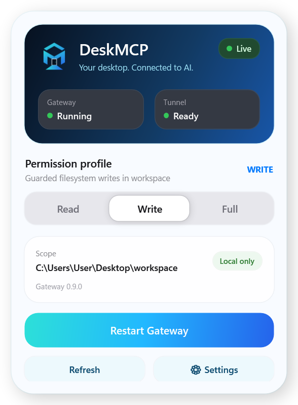
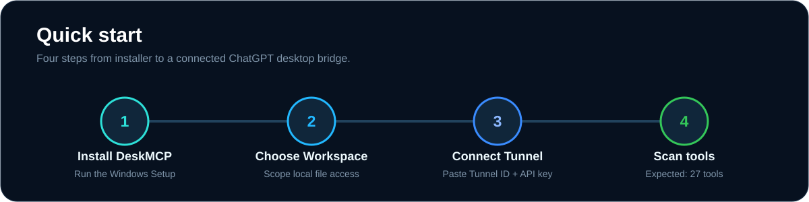

Local-first
The Gateway and policy enforcement run on your computer. The local MCP endpoint stays bound to 127.0.0.1.
Give ChatGPT controlled access to local files and terminal sessions through a policy gateway that runs on your computer.
Self-contained Windows Setup. No Node.js, npm, .NET SDK, Git or source checkout required.
Windows builds are currently unsigned while SignPath Foundation approval is pending, so SmartScreen may show an Unknown Publisher warning.
DeskMCP sits between ChatGPT and your machine. Every filesystem or process action is checked against the policy you choose locally.
The Gateway and policy enforcement run on your computer. The local MCP endpoint stays bound to 127.0.0.1.
First run starts Read-only. Safe profiles stay inside a Workspace you select, with sensitive paths excluded before search.
Files, bounded search and Gateway-owned terminal sessions stay discoverable while local policy decides what is actually permitted.
Full and Unlock are session-only. A restart returns DeskMCP to the last safe persisted Read or Write profile.
Read, list, metadata and bounded search inside your selected Workspace.
Adds create, edit, write and move operations with observation guards.
Keeps the Workspace boundary while enabling Gateway-owned process sessions.
Disables DeskMCP Workspace and sensitive-path guards. Windows ACL/UAC still applies.
Gateway health, Tunnel state, active profile, Workspace, startup settings and secret-safe Tunnel configuration live in a native Windows tray app.

Run the self-contained Setup and choose the Workspace DeskMCP may access.
Paste the Tunnel ID and Runtime API Key into First Run. Secrets are protected locally with DPAPI.
Create a new Plugin using Tunnel + No auth, scan tools, and confirm the 13 DeskMCP tools.


The OpenAI Tunnel carries transport. DeskMCP still decides locally whether a filesystem or process operation is allowed before forwarding it to Desktop Commander.
DeskMCP is a personal open-source project by edmen12, licensed under Apache-2.0. Releases, security policy, privacy behavior, checksums and roadmap are all public.